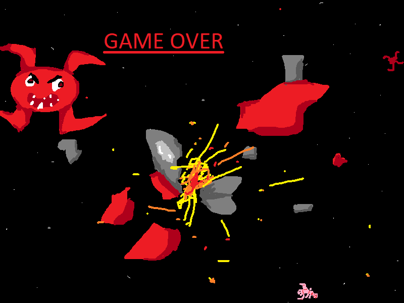

DJPörrö Tarjoaa
JokirapuGame theme song
Production By: JossiTheJokirapuProductions

Tämä on erään nuoren kaverin kehittämä taitava musikkalinen esitelmä.
Rapujen Nousu (v1) - DJPörrö
Production By: JossiTheJokirapuProductions
Made using Suno AI (Link to song).

Tämä laulu kertoo eräästä karvaisesta kaverista ja hänen kokemuksistaan rapujen kanssa. Kivisestä ensitapaamisesta huolimatta onneksi rapujen ja karvakamun ystävyys saa onnellisen lopun.